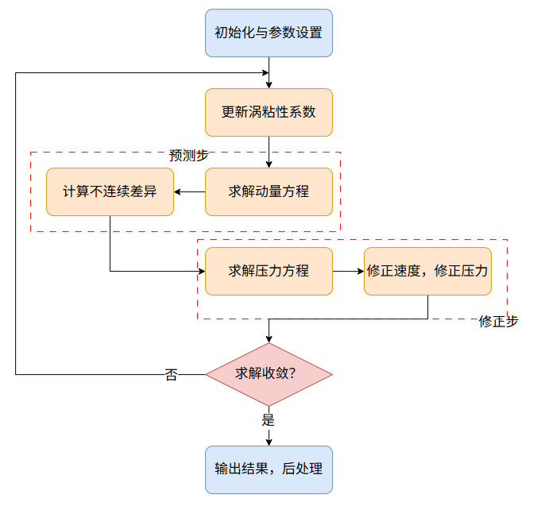

一 SIMPLE算法概述
SIMPLE（Semi-Implicit Method for Pressure Linked Equations），全称压力耦合方程组半隐式求解方法，是一种针对不可压NS方程，通过数值上解耦速度和压力实现求解的算法，常常用于求解稳态流动问题。
本文及后续SIMPLE系列文章来源于笔者近期的学习经历，介绍SIMPLE的基本实现和思路，并通过这一计算流体力学中经典的算法，窥见CFD求解中的部分基础思想和常见方法。
二 SIMPLE算法理解
2.1 从简化到实际
我们以流体力学中经典的benchmark——二维Poiseuille流为例。考虑完全发展、定常的槽道流，动量方程可以写为：
$$ \frac{d}{dy}\ ( \mu\frac{dU}{dy} )-P_x=0 $$该动量方程无比简洁，运用小学知识即可将其离散为一维的差分方程并直观地数值求解；为了更高的数值精度，也可采用半网格方法处理粘性系数。若考虑均匀粘性的层流情况，$ \mu=cons.$，该方程甚至有经典的抛物线分布理论解。
然而，若要考虑流动在整个管道中的分布，必须考虑流动入口处非均匀的速度、压力分布。此时，垂直于流动方向的速度是不可忽略的。完整的二维动量方程形如（忽略体积力）：
$$ \rho\left(\frac{\partial u}{\partial t}+u \frac{\partial u}{\partial x}+v \frac{\partial u}{\partial y}\right)=-\frac{\partial p}{\partial x}+\frac{\partial}{\partial x}\left(2 \mu \frac{\partial u}{\partial x}\right)+\frac{\partial}{\partial y}\left[\mu\left(\frac{\partial u}{\partial y}+\frac{\partial v}{\partial x}\right)\right] $$$$ \rho\left(\frac{\partial v}{\partial t}+u \frac{\partial v}{\partial x}+v \frac{\partial v}{\partial y}\right)=-\frac{\partial p}{\partial y}+\frac{\partial}{\partial y}\left(2 \mu \frac{\partial u}{\partial y}\right)+\frac{\partial}{\partial x}\left[\mu\left(\frac{\partial u}{\partial y}+\frac{\partial v}{\partial x}\right)\right] $$其中压力$p=p(x,y)$。事实上，对于类似给定压力梯度的流动，压力可以写为类似于分离变量的形式：
$$ p(x,y)=P_x x+p^*(x,y) $$带回动量方程可以发现，给定的压力梯度在这里处理为了一种动量方程的源项；事实上，OpenFOAM示例算例planarPoiseuille中便做了类似的处理来添加压力梯度（fvModels，semiImplicitSource）。$p^*(x,y)$的意义稍后会提到。
另外有连续性方程来封闭方程组：
$$ \frac{\partial u}{\partial x}+\frac{\partial v}{\partial y}=0 $$很容易发现，这三个方程中压力和速度是强耦合的，数值构造的难度与之前提到的一维问题天壤之别。究其原因，是引入了第二个方向后，需要同时考虑不均匀的压力分布和连续性方程。
然而数学和自然是统一的。二者同时加入了封闭的系统，二者也必然能相互封闭，两难自解。
2.2 以压力为媒：压力修正法
我们自然而然地想到：可不可以先求解动量方程，再让压力和连续性方程相互满足？
这便是压力修正法的基本思路——先假定压力分布，求解动量方程得到预测速度，再反过头来求解压力，并修正速度，使得速度可以满足连续性方程。
在流体力学中，有关压力的方程为泊松方程。事实上，压力泊松方程的推导形式与连续性方程极为相似，即对动量方程求散度，带入连续性条件得到：
$$ \nabla^2p=\rho((\frac{\partial u}{\partial x})^2+(\frac{\partial v}{\partial y})^2+2\frac{\partial u}{\partial y}\frac{\partial v}{\partial x}) $$该方程的推导过程中，代入离散形式和预估变量，即可得到压力修正方程。压力修正方程的一般形式为：
$$ \nabla^2p=f(u) $$其中$f(u)$为源项，往往为预估速度的连续性误差。该部分内容会在后续文章中详细介绍。由此可见，方程的连续性在压力修正法中通过压力得到了体现；相较于连续性的零散度，多出来的速度散度，也即体积膨胀，通过压力“压缩”进行补偿。
回到我们之前讨论的Poiseuille流问题：很显然，给定的压力梯度并不体现在修正方程中。可以不充分但不失一般性地认为，在求解这一问题过程中，相较于一维问题，二维问题引入的垂向速度在原有压力梯度的基础上引入了额外的压力分布，其正是压力修正的主角；也可以发现，独立于原有压力梯度，新引入的压力分布和垂向速度构成封闭和自洽，可以窥见压力修正法的基本思想。
得到压力后，基于该压力值修正速度，进行迭代，即可获得同时满足连续性方程和动量方程的速度值。
三 SIMPLE的基本流程
总结而言，SIMPLE算法在每一个迭代步内包含以下步骤：
-
预测步：根据假定压力（或上一步压力）计算动量方程
-
修正步：求解压力修正方程，修正压力和速度
-
根据速度计算其他输运量
整体程序实现如下框图所示：
